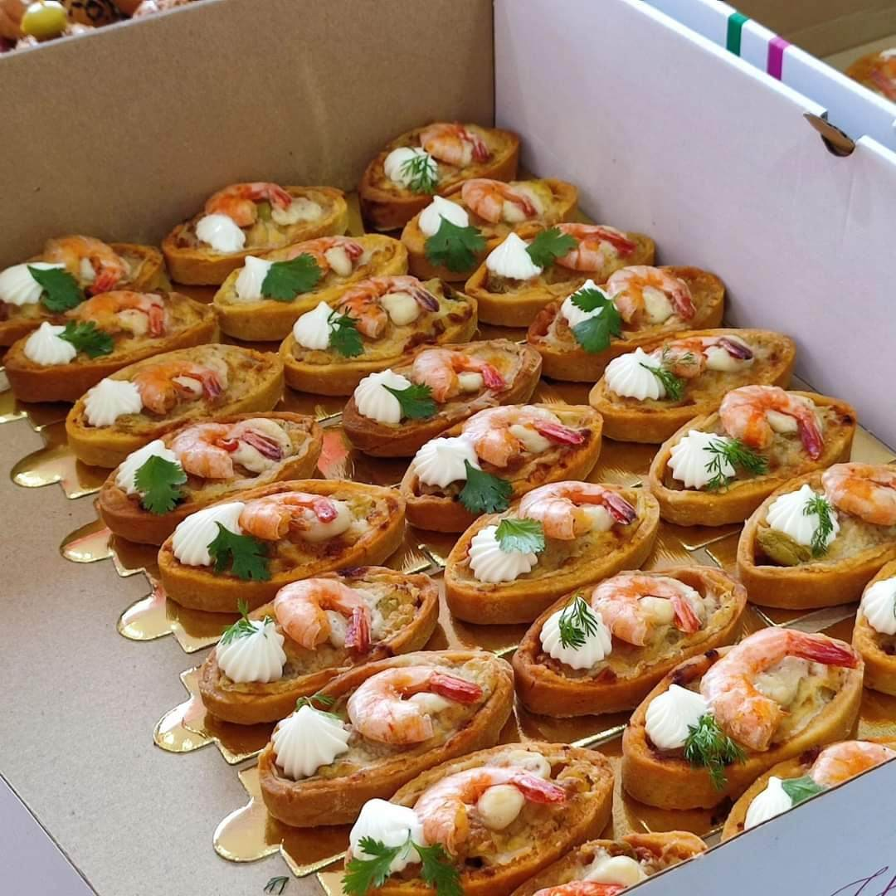
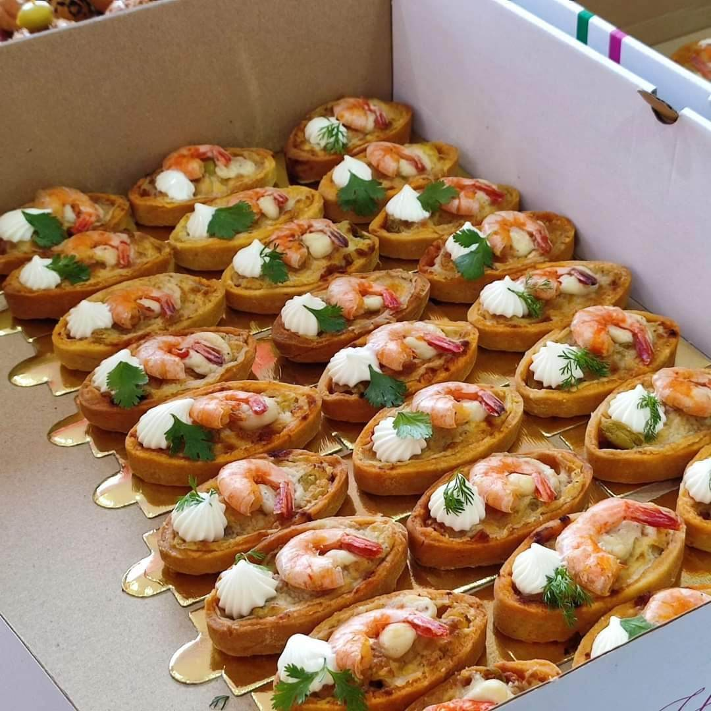
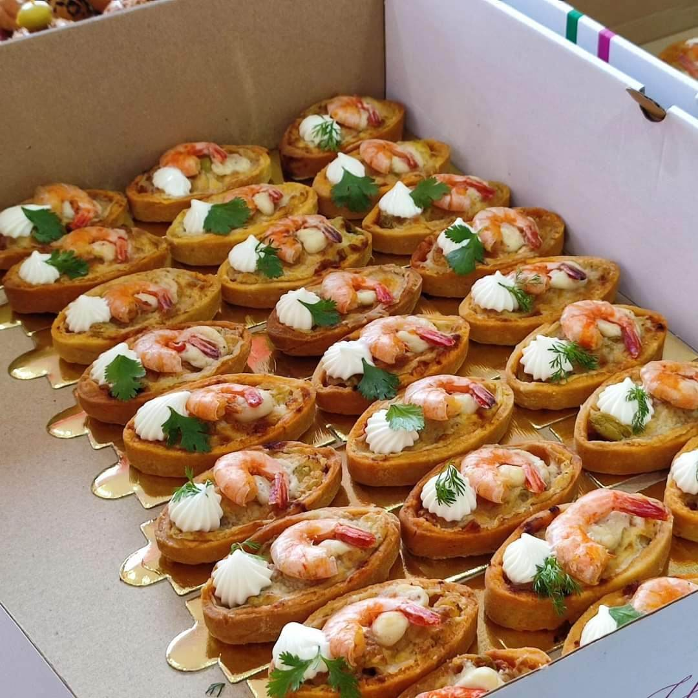
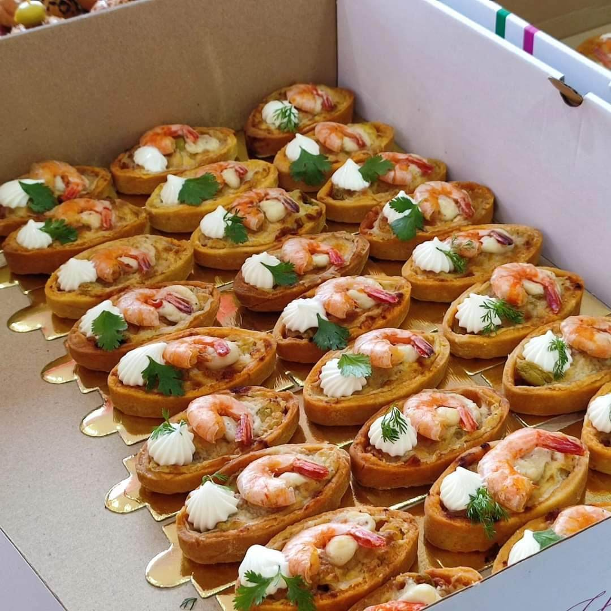

Bienvenue chez Swing pastry , où la perfection de la pâtisserie rencontre la commodité ! Depuis d'innombrables années, la passion de swing pastry pour la préparation des tartes et des salé les plus délicieuses est un délice inégalé. Notre voyage a commencé en 2022 lorsque nous avons dévoilé notre première boutique de charme dans la ville d'Oran dans le grand boulevard de belgaid (désormais ouverte), C'est ici que nos tartes ont conquis les cœurs pour la première fois et les papilles gustatives des gens des quatre coins du monde, des délicieux gâteaux moelleux aux cheesecakes paradisiaques et aux tartes aux citron aux épices alléchantes et des tarte d anniversaire pour tous les age et aux différent goûts ainsi des salé aux thon et a la viande . L'extraordinaire succès de notre magasin n'est rien d'autre qu'un conte de fée culinaire. Alors que la demande pour les créations divines de swing pastry montait en flèche, une étape incroyable a été franchie fin 2023 grace a vous notre aimable clientèle, lorsque nous sommes fiers de vendre un nombre incroyable de tartes gateau et salé chaque jour ! L'amour et le soutien que nous avons reçus de notre communauté toujours croissante nous ont inspiré à explorer de nouvelles possibilités. En réponse aux nombreuses demandes sincères des amateurs de tartes du monde entier, nous savions que le moment était venu de proposer nos délicieuses friandises à votre porte. Ainsi, que cette année 2024 on a décidé de vous faire une grande surprise créer notre site en ligne , un havre virtuel où vous pouvez désormais savourer le plaisir de commander nos délicieuses tartes gâteaux et salé le confort de votre foyer, peu importe où vous résidez dans le monde. Qu’est-ce qui nous distingue, demandez-vous ? Chez Swing pastry, nous croyons qu'il est important d'utiliser uniquement les meilleurs ingrédients triés sur le volet pour créer chaque chef-d'œuvre. NOTRE OBJECTIF ET VÔTRE SATISFACTION SOYEZ LES BIENVENUE CHEZ SWING PASTRY .